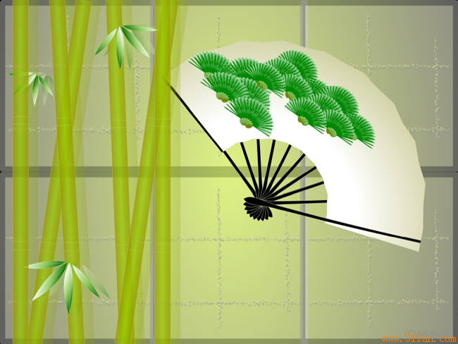

诗词，是指以近体诗和格律词为代表的中国传统诗歌。通常认为，诗更适合“言志”，词更适合“抒情”。 诗词是阐述心灵的文学艺术，而诗人、词人则需要掌握成熟的艺术技巧，并按照严格韵律要求，用凝练的语言、绵密的章法、充沛的情感以及丰富的意象来高度集中地表现社会生活和人类精神世界。中国诗起源于先秦，鼎盛于唐代。中国词起源于隋唐，流行于宋代。中华诗词源自民间，其实是一种草根文学。在21世纪的中国，诗词仍然深受普通大众青睐。